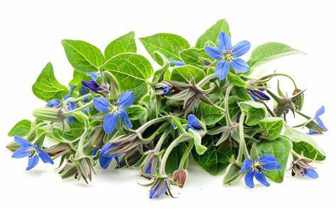
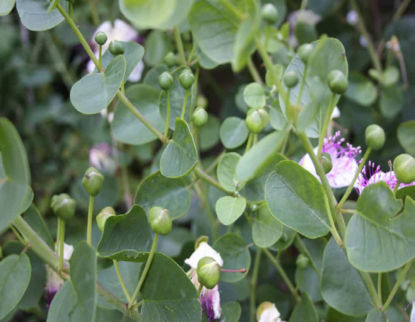

Food and Human Nutrition
Form Two
Type of herb
Description
Dishes
Garlic
Bulb
Stews, soups, sauces and salad dressing
Basil
Leaves
Eggs or mushroom dishes and salads

Borage
Leaves with blue flowers
Salads and fruit drinks

Capers
Unopened flower buds
Sauces and sandwiches
Coriander leaves
Leaves
Curries and stews